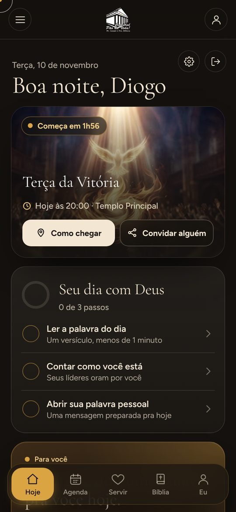
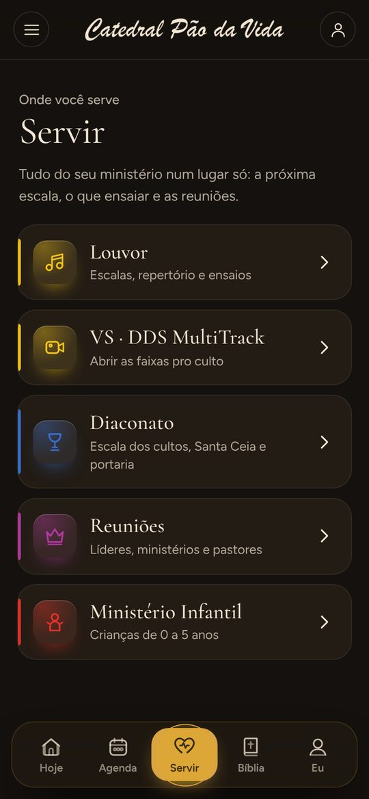
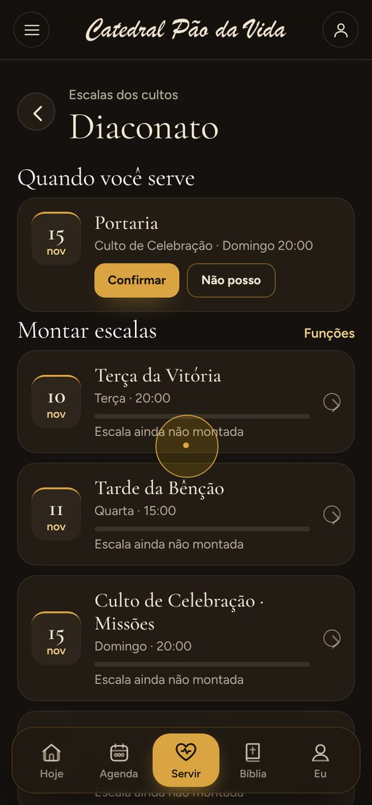
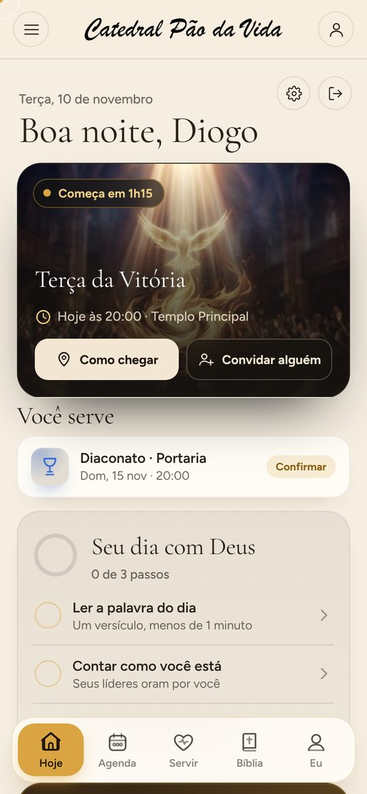

Igreja do Evangelho Quadrangular em Balneário Ipanema, Pontal do Paraná. Pr. Ismair e Pra. Débora.
Eu sou o pão da vida; aquele que vem a mim não terá fome, e quem crê em mim nunca terá sede.João 6:35
Louvor, Palavra e oração. Chegue alguns minutos antes, tem sempre alguém na porta pra te receber.
Entre o mar e a Serra do Mar, em Balneário Ipanema, uma família se reúne pra adorar a Deus e repartir o pão da vida com quem chega.
A Catedral Pão da Vida nasceu do desejo de levar a Palavra a quem vive e a quem passa pelo litoral do Paraná: moradores, pescadores, famílias que chegam no verão e quem procura um recomeço.
Divulgamos a Palavra do Senhor em testemunho de vida, palavras de encorajamento, aconselhamento e nas atividades da nossa cidade.
Somos uma Igreja do Evangelho Quadrangular. Os quatro símbolos da nossa logo contam no que cremos.
Funciona direto no navegador, sem baixar nada. É só abrir e entrar.
E um passo a passo do seu dia com Deus: a palavra do dia, como você está e uma mensagem pra você.
Escalas, repertório, o VS pro culto e a liderança alinhada num só lugar.
O diácono confirma no app. Se não puder, avisa o líder com um toque.
Cada um escolhe a aparência que prefere.




Abra o app, veja o próximo culto e chame alguém pra vir junto.